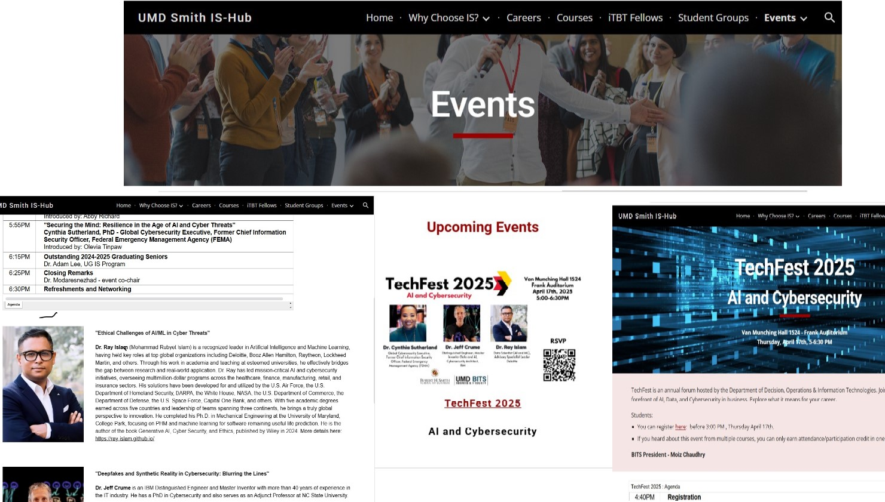
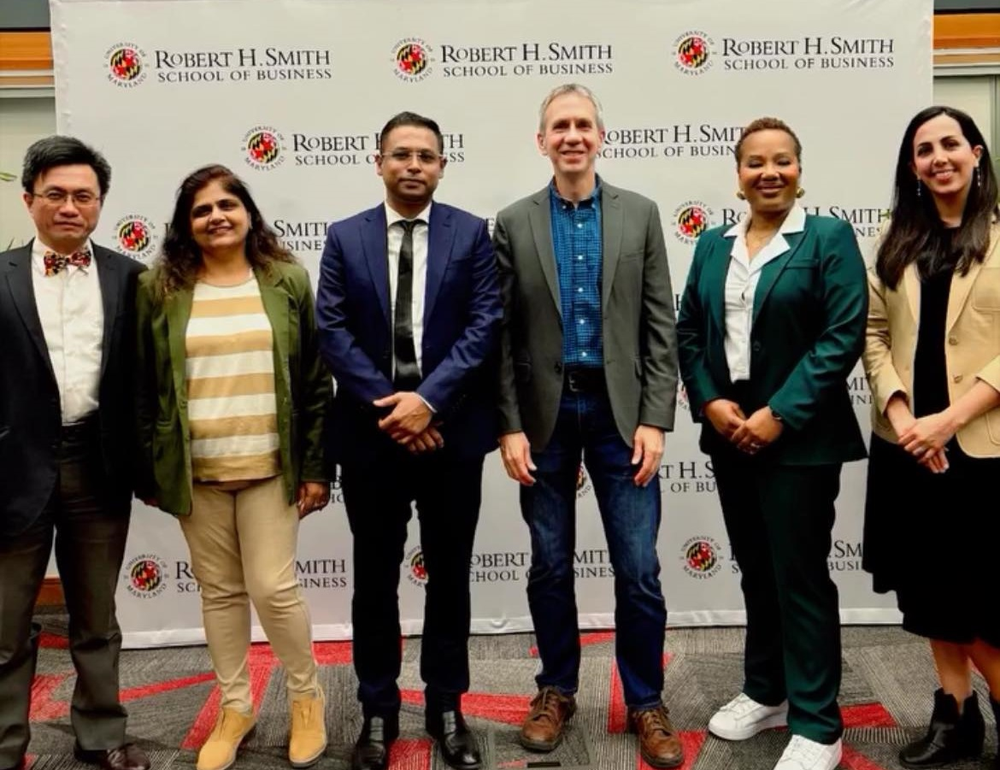
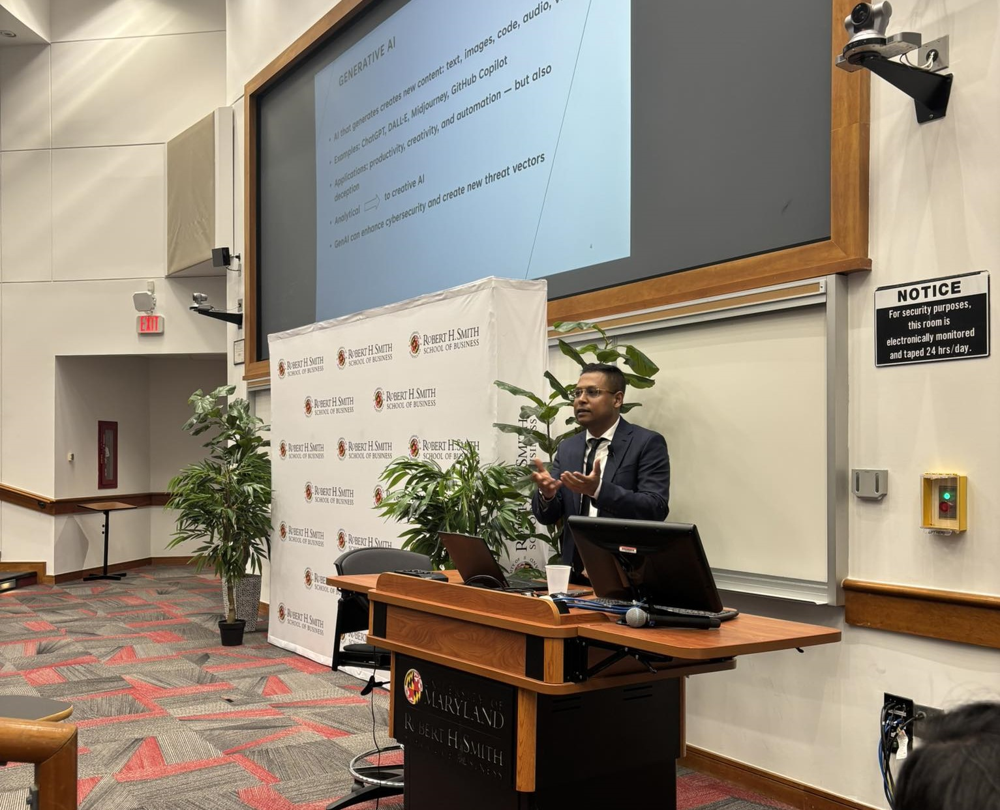

Event Photos

TechFest 2025 Event Flyer

TechFest 2025 Panel Discussion

University of Maryland Speaker Session

Cancer Research & Cybersecurity Symposium

Audience Engagement Session
Future Event Photo
Upcoming Conference